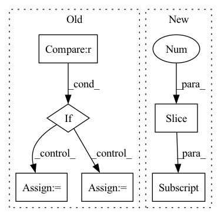

Pattern ID :3455
Before Change
if self.weight is not None:
self.weight = move_to(self.weight, device)
if self.ignore_index is not None :
target = torch.argmax(target, dim=1)
loss = nn.functional.cross_entropy(pred, target, weight=self.weight, ignore_index=self.ignore_index)
else:
loss = nn.functional.cross_entropy(pred, target, weight=self.weight)
loss_dict = {"CE": loss.item()}
return loss, loss_dictAfter Change
pred = outputs["outputs"]
targets = move_to(batch["targets"], device)
batch_size, num_classes = pred.shape[:2]
y_hot = move_to(torch.zeros(pred.shape), device).scatter_(1, targets.unsqueeze(1) , 1.0)
y_smooth = (1 - self.alpha) * y_hot + self.alpha / num_classes
loss = torch.sum(- y_smooth * torch.nn.functional.log_softmax(pred, -1), -1).sum()
In pattern: SUPERPATTERN
Frequency: 5
Non-data size: 6
Instances Fragment ID: 17550347
Project Name: kaylode/theseus
Commit Name: b842d768df45af67b9f7ac5349f0a65cf607ddad
Time: 2022-09-27
Author: pmkhoi@selab.hcmus.edu.vn
File Name: theseus/semantic/losses/ce_loss.py
M Class Name: CELoss
N Class Name: SemanticSmoothCELoss
M Method Name: forward(4)
N Method Name: forward(4)
M Parent Class: nn.Module
N Parent Class: nn.Module
M File Name: theseus/semantic/losses/ce_loss.py
N File Name: theseus/semantic/losses/ce_loss.py
M Start Line: 17
M End Line: 29
N Start Line: 42
N End Line: 53
Before Change
for i in range(self._levels):
head = self._heads[i]
z = head(latent)
if i < self._levels - 1 :
mapper = self._mappers[i]
latent = mapper(latent)
code = self._quantizers[i](z)
hard = self._deQuantizers[i](code)
latent = latent - hard
else:
code = self._quantizers[i](z)After Change
z = self._heads[-1](latent)
codes.append(self._quantizers[-1](z))
// codes from small to big
return codes[::-1] , cAndPadding
class RefDecoder(nn.Module): Fragment ID: 17550408
Project Name: xiaosu-zhu/mcquic
Commit Name: 5eab1f3405e52a0cf81c11777abe1eafeb655b59
Time: 2021-10-08
Author: xiaosu.zhu@outlook.com
File Name: src/mcqc/evaluation/refModel.py
M Class Name: RefEncoder
N Class Name: RefEncoder
M Method Name: forward(3)
N Method Name: forward(2)
M Parent Class: nn.Module
N Parent Class: nn.Module
M File Name: src/mcqc/evaluation/refModel.py
N File Name: src/mcqc/evaluation/refModel.py
M Start Line: 136
M End Line: 150
N Start Line: 154
N End Line: 167
Before Change
def forward(self, x):
out = self.backbone(x)
if out.size(-1) != 1 :
out = F.relu(out, inplace=True).mean([2, 3])
else:
out = out.squeeze()
out = self.dropout(out)
return self.fc(out)
After Change
def forward(self, *x):
x = list(x)
input_shape = x[0].shape[-2:]
out = self.bacbone(x[0])
x[0] = out
out = self.classifer(*x)
if out.dim() != 5: Fragment ID: 17550334
Project Name: sungbinlim/neuboots
Commit Name: ded678ac1ebc9480abda4b2edf1614501d3242db
Time: 2021-02-08
Author: phelahab@gmail.com
File Name: models/nbsnet.py
M Class Name: GeneralConvNet
N Class Name: SegNet
M Method Name: forward(1)
N Method Name: forward(2)
M Parent Class: nn.Module
N Parent Class: nn.Module
M File Name: models/nbsnet.py
N File Name: models/nbsnet.py
M Start Line: 53
M End Line: 59
N Start Line: 56
N End Line: 68
Before Change
batch_size = fv.shape[0]
seq_len = fi.shape[1]
if fv_alter is None :
v_in = fv
else:
v_in = fv * dec[:, :, 0].unsqueeze(-1) + fv_alter * dec[:, :, 1].unsqueeze(-1)
fused = self.fuse(v_in, fi)
out, hc = self.rnn(fused) if prev is None else self.rnn(fused, prev)After Change
prev = (prev[0].transpose(1, 0).contiguous(), prev[1].transpose(1, 0).contiguous())
// Select between fv and fv_alter
v_in = fv * dec[:, :, :1] + fv_alter * dec[:, :, -1:] if fv_alter is not None else fv
fused = self.fuse(v_in, fi)
out, hc = self.rnn(fused) if prev is None else self.rnn(fused, prev)
out = self.rnn_drop_out(out) Fragment ID: 17550338
Project Name: mingyuyng/visual-selective-vio
Commit Name: a8d443c68112716ac78b026ac1349e8f92c70641
Time: 2022-07-11
Author: mingyuy@umich.edu
File Name: model.py
M Class Name: Pose_RNN
N Class Name: Pose_RNN
M Method Name: forward(6)
N Method Name: forward(6)
M Parent Class: nn.Module
N Parent Class: nn.Module
M File Name: model.py
N File Name: model.py
M Start Line: 181
M End Line: 189
N Start Line: 184
N End Line: 184
Before Change
batch_size = content_code.shape[0]
content_code = content_code.view((batch_size, -1, 4, 4))
if self.training and self.config["content_std"] != 0 :
noise = torch.zeros_like(content_code)
noise.normal_(mean=0, std=self.config["content_std"])
out = content_code + noise
else:
out = content_code
for layer in self.layers:
out = layer(out, class_code, None)After Change
skip = self.to_rgb1(out, latent[:, 1])
i = 1
for conv1, conv2, to_rgb in zip(self.convs[::2], self.convs[1::2] , self.to_rgbs):
out = conv1(out, latent[:, i])
out = conv2(out, latent[:, i + 1])
skip = to_rgb(out, latent[:, i + 2], skip) Fragment ID: 17550421
Project Name: avivga/overlord
Commit Name: b0f943171d9586ee561baa9a794cfcd4fe07b753
Time: 2020-08-17
Author: avivga@gmail.com
File Name: network/modules.py
M Class Name: Generator
N Class Name: Generator
M Method Name: forward(3)
N Method Name: forward(3)
M Parent Class: nn.Module
N Parent Class: nn.Module
M File Name: network/modules.py
N File Name: network/modules.py
M Start Line: 42
M End Line: 57
N Start Line: 67
N End Line: 85